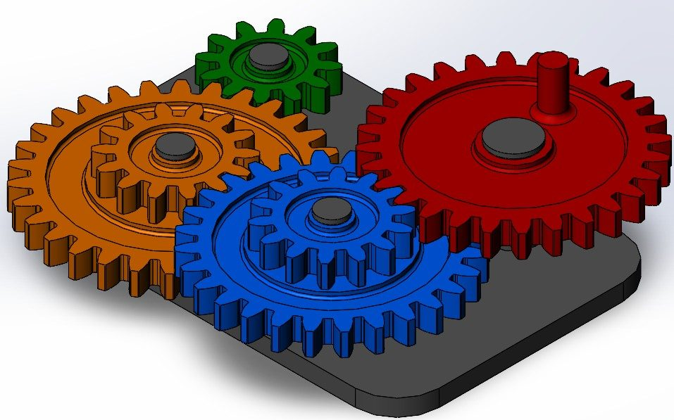

All Projects
Projects & Engineering Work
Everything I have built so far — school coursework, UBCO Aerospace club builds, and personal prototypes I made just to figure out how they work.

Data Acquisition Buoy System (DABS)
Developed a conceptual environmental buoy system to support nutrient monitoring in aquatic ecosystems. Nominated in the Design Process Category at Aquahacking Binational 2026.

Forged Carbon Fiber Motor Mount
Replaced a machined aluminum motor mount with a forged chopped-tow carbon fiber part — 57.9% lighter, designed and molded from scratch through multiple mold revisions.

Involute Gear Train
Modelled a 4-gear compound train from the involute equation in SolidWorks, then 3D printed every gear at the UBCO Makerspace. Iterated on clearance to get clean mesh.
Hand Gesture Controlled LED System
Used Python, OpenCV, and MediaPipe to detect hand landmarks from a webcam, then mapped the five finger states to individual LEDs on an Arduino via PyFirmata2.